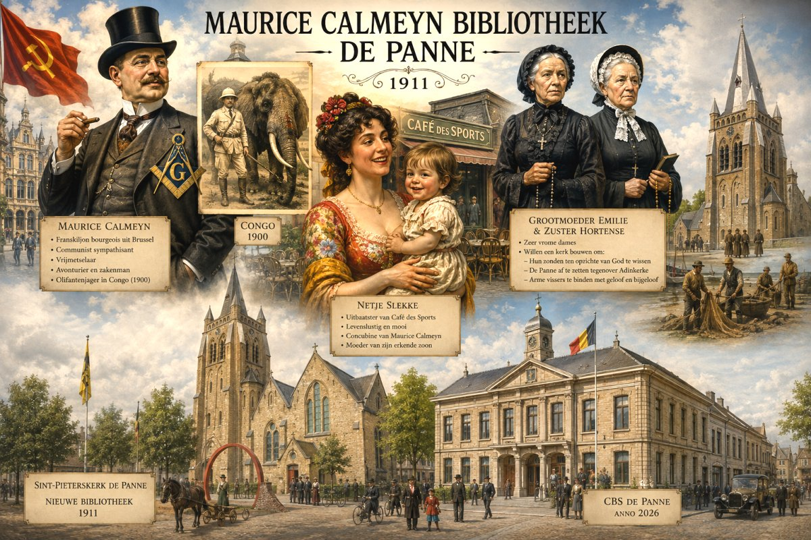
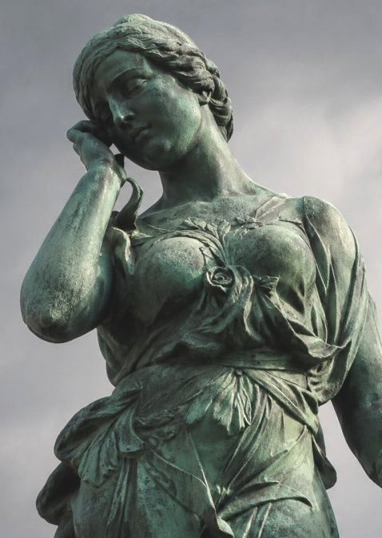
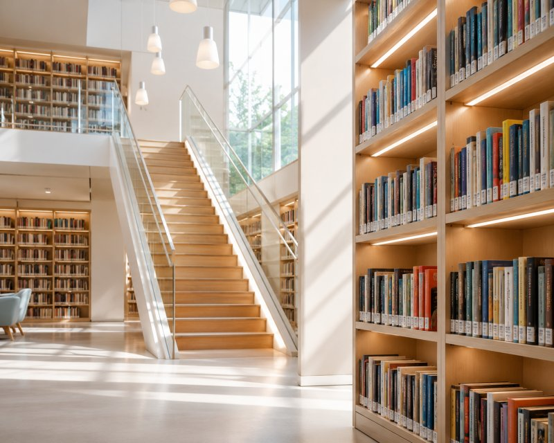
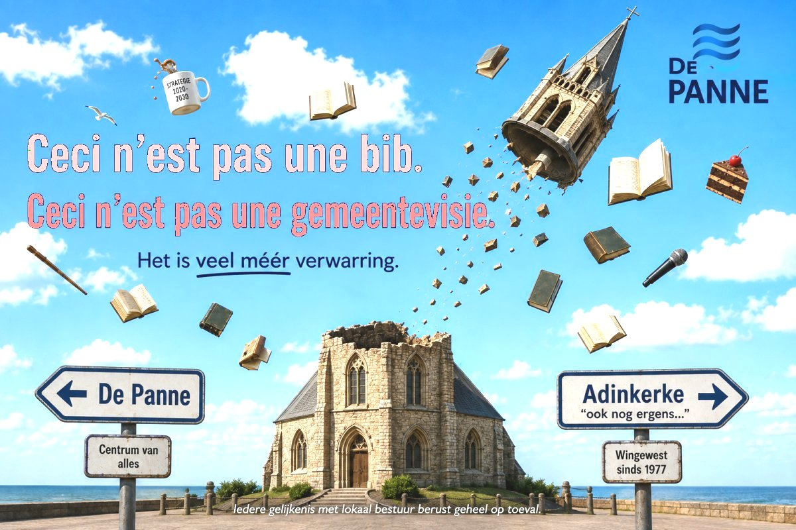

De geschiedenis wordt meestal geschreven door de machthebbers.
Ook die van De Panne.


De gemeente De Panne bestaat officieel pas sinds 1911. Daarvoor maakte zij deel uit van Adinkerke, een kleine landelijke gemeente waarvan de bewoners voornamelijk leefden van de visserij, de landbouw en enkele lokale ambachten.
De geschiedenis van De Panne wordt meestal verteld als het succesverhaal van een toeristische badplaats. De villa's, de koninklijke bezoeken, de belle époque en de rijke vakantiegangers, krijgen daarin alle aandacht.
Veel minder aandacht gaat naar de mensen die er al generaties woonden vóór de eerste Brusselaars arriveerden: de vissers, de boeren en de kleine middenstanders. Nochtans waren het de inwoners die de grond bezaten, de huizen bouwden, de gemeente onderhielden en uiteindelijk de prijs betaalden voor haar ontwikkeling.
Vanaf het einde van de negentiende eeuw ontdekten de welgestelde Brusselaars de Vlaamse kust.
Families als Bortier en Calmeyn zagen in De Panne niet alleen een vakantieoord maar ook een investeringsproject. Duingronden werden opgekocht of geërfd, verkaveld en omgevormd tot villawijken, voornamelijk voor een Franstalig publiek.
De nieuwe bewoners brachten hun eigen cultuur mee. Frans werd de taal van prestige. De omgangsvormen van de Brusselse burgerij golden als voorbeeld. Jongeren uit gegoede families werden naar Franstalige pensionaten gestuurd om de etiquette van de hogere burgerij te leren en hun sociale netwerk uit te bouwen.
De Panne werd steeds meer een kustkolonie van de Brusselse bourgeoisie.
De vergelijking met een kolonie is uiteraard geen juridische maar een maatschappelijke vergelijking.
Zoals koloniale elites elders, beschouwden vele Brusselse bourgeois de plaatselijke bevolking als mensen die moesten worden opgevoed, geciviliseerd en gedomineerd. Hun eigen taal en cultuur golden als superieur. Het Frans werd de taal van de macht; het West-Vlaams hoorde thuis in de keuken, op het vissersstrand of op het veld.
De plaatselijke bevolking leverde de arbeidskrachten.
De economische ontwikkeling kwam vooral ten goede aan de eigenaars van de grond en het kapitaal.
De sociale afstand tussen bewoners (de inheemsen / inlanders) en bezoekers (kolonialen) was bijzonder groot.
Tijdens de zomer verhuisden de gezinnen van de inlanders naar hun kelder of naar een achtergebouw om hun beste kamers te verhuren aan vakantiegangers.
De plaatselijke bevolking leefde van het seizoen.
De bezoekers/toeristen genoten van het seizoen.
Ook cultureel ontstond een afhankelijkheidsrelatie. Wie maatschappelijk vooruit wilde, moest Frans spreken, nam Brusselse gewoonten over en spiegelde zich aan de hogere burgerij. Zoals Molière beschreef in Le Bourgeois gentilhomme of Conscience in Baas Ganzendonck probeerden de inheemsen de levensstijl van de kolonisatoren na te bootsen.
Zo ontstond een samenleving waarin sommige inwoners zich meer verbonden waanden met de Brusselse bezoekers dan met hun eigen vissers- en boerenbevolking.
Maurice Calmeyn (°1863 - †1934) was een product van de belle époque periode die zich situeert in de periode 1880 - 1914.
De stamboom van de families Bortier-Calmeyn is terug te vinden in het boek van Hans Berquin, In het Zand geschreven.
Maurice Calmeyn was de zoon van Pierre Calmeyn, die de zoon was van Joseph Calmeyn en Emilie Bortier (°1802 - †1891).
Zijn grootmoeder Emilie, zijn tante (†1893) en zuster Hortense Calmeyn (°1860 - †1916) waren zeer vrome katholieke mensen. Ze lieten de Sint-Pieterskerk in De Panne bouwen en zochten de nodige fondsen bijeen om dit alles te kunnen betalen.
Zijn kritiek op Leopold II en het koloniale systeem in Congo was opmerkelijk voor zijn tijd. Maar tegelijk leefde Maurice in De Panne als lid van dezelfde Franstalige bourgeoisie die de badplaats economisch, cultureel en maatschappelijk domineerde.
Maurice was het zwarte schaap en een ware uitgestotene binnen zijn familie. Zowel zijn grootmoeder Emilie Bortier als zijn tante en zuster Hortense Calmeyn – die keurig binnen de elite met een Orban trouwde en vier kinderen kreeg – konden hem niet luchten of zien.
In 1911 won Ernest D'Arripe de eerste verkiezingen van de zelfstandige gemeente De Panne glansrijk en nam alle 9 zetels in. Door zich op te werpen als de grote verdediger van de Katholieke Partij en de katholieke scholen, verzekerde d'Arripe zich van de macht. Het moet voor Maurice een bittere pil zijn geweest: hij verloor de macht in 'zijn' De Panne aan een katholieke Brusselse bourgeois die ook nog eens met zijn eigen familie was verstrengeld. Dit verklaart waarom hij verder radicaliseerde en eindigde als communist.
Maar Calmeyn was en bleef van huis uit een rijke Brusselaar en erfgenaam van een aanzienlijk familiefortuin, waarvan hij rijkelijk profiteerde.
Volgens de plaatselijke overlevering had hij bijvoorbeeld een relatie met Netje Slekke, de mooie uitbaatster van Café des Sports. Hij had zelfs een kind met haar (dat hij later officieel zou erkend hebben - toen bestond nog geen DNA onderzoek). Of alle details historisch bewezen zijn, doet minder ter zake dan de symboliek ervan. Ook hier zien we een vermogende notabele die zich privileges kon veroorloven die voor gewone inwoners onbereikbaar waren.
Na het grootste deel van zijn leven in Brussel te hebben doorgebracht en daar alle bruggen te hebben verbrand, koos hij er later voor om zich definitief in De Panne te vestigen. Maurice trouwde in 1919 in Parijs met de Parisienne Jeanne Heim. Op het moment van hun huwelijk was zij 23 jaar jonger dan hij.
Die bibliotheek staat op grond die het gemeentebestuur in erfpacht kreeg en werd ingericht in de Sint-Pieterskerk waarin volgens het legaal, de eredienst tot God eeuwigdurend moest beoefend worden. Emilie Bortier en Hortense Calmeyn zouden er nooit mee akkoord gaan dat die kerk nu de naam van een antichrist krijgt.
Een bibliotheek is meer dan een gebouw. Zij vertelt ook wie een gemeenschap belangrijk vindt. De beslissing van het CBS om de gemeentelijke bibliotheek te vernoemen naar een figuur als Maurice Calmeyn, roept legitieme vragen op:
Nuance betekent ook dat men zich mag afvragen of een franskiljonse grootgrondbezitter - die leefde tijdens de belle époque periode - de meest aangewezen naamgever is voor een nieuwe Vlaamse openbare bibliotheek in De Panne.
De keuze voor Maurice Calmeyn als naamgever van de bibliotheek lijkt erop te wijzen dat het College van Burgemeester en Schepenen nog steeds meer waardering heeft voor de historische erfenis van de Franstalige Brusselse elite dan voor die van de vissers, boeren en gewone inwoners die De Panne hebben opgebouwd.
En dat het College van Burgemeester en Schepenen van De Panne zich, meer dan een eeuw na het ontstaan van de gemeente, nog altijd niet volledig heeft losgemaakt van de erfenis van de Franstalige Brusselse bourgeoisie.
De geschiedenis van De Panne is rijker en complexer dan het klassieke verhaal van een toeristische badplaats.
Naast architectuur, toerisme en economische groei bestaat ook een minder bekende geschiedenis: die van een plaatselijke bevolking die zich moest aanpassen aan een nieuwe maatschappelijke orde, gedomineerd door een Franstalige burgerij.
Die ontwikkeling kan worden omschreven als een vorm van interne kolonisatie: geen kolonisatie overzee, maar een proces waarbij economische macht, cultureel prestige en sociale invloed zich concentreerden bij een beperkte elite.
Wie vandaag door De Panne wandelt, ziet nog steeds de sporen van dat verleden in de villa's, de straatnamen, de verkavelingen en de instellingen die deze geschiedenis levend houden.
Een evenwichtige geschiedschrijving heeft niet de bedoeling personen te veroordelen of te verheerlijken maar om hun tijd in al haar complexiteit te begrijpen. Alleen zo ontstaat een vollediger beeld van het verleden.
Een historische figuur zoals Calmeyn is daarom nog geen eerbare historische figuur. Zelfs indien Maurice Calmeyn gelijk had over wat hij schreef over het Vlaamse volk (bv. dat hun lichaamshygiëne niet goed was) of over de katholieken of over koning Leopold II, dan nog verdient hij niet om zijn naam te geven aan de bibliotheek.
Een Vlaamse bibliotheek moet de absolute tempel zijn van taal, geletterdheid, onderwijs en lokale gemeenschapsvorming. Dat uitgerekend dít gebouw de naam krijgt van een Brusselse franskiljon die de Vlaamse cultuur miskende, is een historische misstap van formaat. De Franstalige bourgeoisie waartoe hij behoorde, heeft de Vlaamse sociale en taalkundige ontvoogding decennialang actief onderdrukt en de lokale bevolking met dedain behandeld. Die naam is onlosmakelijk verbonden met de historische onderdrukking van het Vlaamse Volk. Het is een belediging voor elke bewuste Vlaming om onder deze vlag boeken te moeten gaan ontlenen.
Een bibliotheek bewaart niet alleen het verleden; zij helpt ook de toekomst vorm te geven. Daarom verdient een openbare Vlaamse bibliotheek een naamgever die kinderen en jongeren inspireert met waarden als kennis, creativiteit, digitalisering, innovatie, ondernemingszin en maatschappelijke vooruitgang. Dat is een ander criterium dan de wanen van het belle époque tijdperk.
De Maurice Calmeynbibliotheek: een misplaatste, niet verantwoorde naamkeuze die bij een deel van de inwoners van Adinkerke en De Panne op ongeloof en onbegrip stuit.
Maar geen probleem.
Wie zich niet kan verzoenen met de naam Maurice Calmeyn
voor de openbare bibliotheek van De Panne, beschikt gelukkig over een
waardig alternatief.
De bibliotheek De Seylsteen in Veurne
blijft een gastvrije openbare bibliotheek voor iedereen, waarvan vele
inwoners van Adinkerke en De Panne ook vroeger reeds gebruikmaakten.
Gebruik van AI
Deze website werd ontwikkeld met behulp van artificiële intelligentie (AI).
AI werd gebruikt als hulpmiddel bij het programmeren, de vormgeving, het ontwerpen en verbeteren van afbeeldingen en het opstellen van teksten.

Bovenstaand verhaal typeert ook het beleid van het bestuur van De Panne: